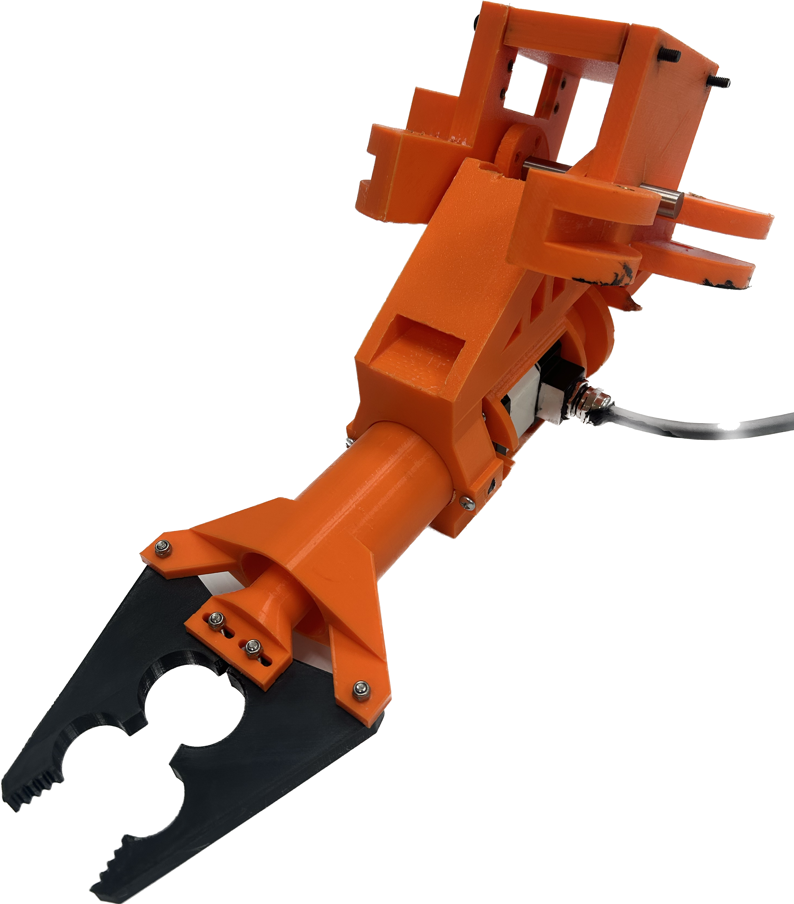

During this Project, I was 1 of the 2 members tasked with the manipulator. I focused on the claw mechanism. Our team
had decided that we were going to try to move further away from servos due to them being prone to faliures. As such I did
research and found that stepper motors were going to be a great alternative. as such, I designed a fully 3d printable
linear actuator based system. Although the claw was working before the competition, we couldnt use it at competition due to the
electronics housing breaking open and ruining all of the electronics inside. Through this experience I learned the toughness of PLA,
multiple waterproofing principles, and the advantages/disadvantages of stepper motors when compared to servos.

During the season, we 3d-model the parts for the ROV before any manufacturing This is to help eliminate any problems with sizing once it is built. I was in charge of 3d-modeling both the frame of the ROV with the thrusters, and control box housing; and the manipulator. Through this I became more experienced with the software Inventor.